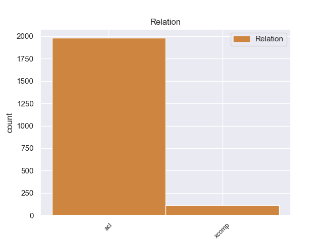
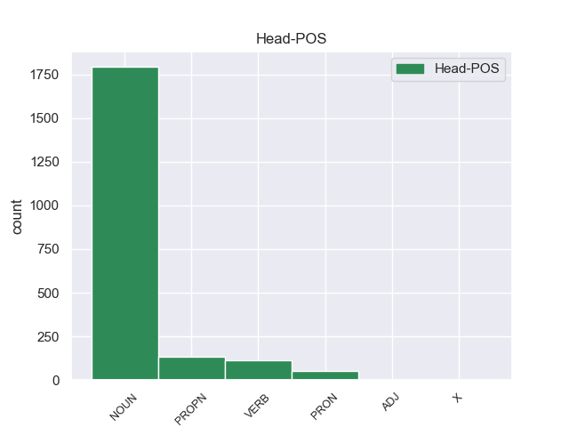
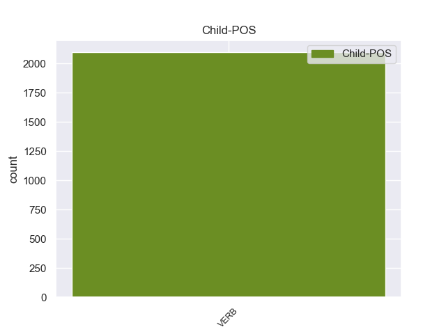

Distribution of features within this leaf



Morphosyntax Rules sorted by frequency.
- When the dependent token is the adjectival clause(acl) of the head token, and the dependent token is VERB, the Tense needs to be Past.
1 Il _ _ _ _ 0 _ _ _
2 riso _ _ _ _ 0 _ _ _
3 integrale _ _ _ _ 0 _ _ _
4 , _ _ _ _ 0 _ _ _
5 cioè _ _ _ _ 0 _ _ _
6 il _ _ _ _ 0 _ _ _
7 riso _ _ _ _ 0 _ _ _
8 con _ _ _ _ 0 _ _ _
9 i _ _ _ _ 0 _ _ _
10 chicchi chicco NOUN S Gender=Masc|Number=Plur 0 _ _ _
11 coperti coprire VERB V Gender=Masc|Number=Plur|Tense=Past|VerbForm=Part 10 acl 10:acl _
12 da _ _ _ _ 0 _ _ _
13 la _ _ _ _ 0 _ _ _
14 buccia _ _ _ _ 0 _ _ _
15 , _ _ _ _ 0 _ _ _
16 contiene _ _ _ _ 0 _ _ _
17 anche _ _ _ _ 0 _ _ _
18 molta _ _ _ _ 0 _ _ _
19 fibra _ _ _ _ 0 _ _ _
20 . _ _ _ _ 0 _ _ _
1 Molti _ _ _ _ 0 _ _ _
2 bambini _ _ _ _ 0 _ _ _
3 e _ _ _ _ 0 _ _ _
4 bambine _ _ _ _ 0 _ _ _
5 brasiliani _ _ _ _ 0 _ _ _
6 vivono vivere VERB V Mood=Ind|Number=Plur|Person=3|Tense=Pres|VerbForm=Fin 0 _ _ _
7 abbandonati abbandonare VERB V Gender=Masc|Number=Plur|Tense=Past|VerbForm=Part 6 xcomp 6:xcomp _
8 per _ _ _ _ 0 _ _ _
9 le _ _ _ _ 0 _ _ _
10 strade _ _ _ _ 0 _ _ _
11 e _ _ _ _ 0 _ _ _
12 non _ _ _ _ 0 _ _ _
13 vanno _ _ _ _ 0 _ _ _
14 a _ _ _ _ 0 _ _ _
15 scuola _ _ _ _ 0 _ _ _
16 . _ _ _ _ 0 _ _ _
non-conforming Examples:
1 La _ _ _ _ 0 _ _ _
2 sua _ _ _ _ 0 _ _ _
3 è _ _ _ _ 0 _ _ _
4 un' _ _ _ _ 0 _ _ _
5 affascinante _ _ _ _ 0 _ _ _
6 opposizione _ _ _ _ 0 _ _ _
7 rispetto _ _ _ _ 0 _ _ _
8 a _ _ _ _ 0 _ _ _
9 l' _ _ _ _ 0 _ _ _
10 immagine _ _ _ _ 0 _ _ _
11 di _ _ _ _ 0 _ _ _
12 le _ _ _ _ 0 _ _ _
13 donne donna NOUN S Gender=Fem|Number=Plur 0 _ _ _
14 a _ _ _ _ 0 _ _ _
15 la _ _ _ _ 0 _ _ _
16 ribalta _ _ _ _ 0 _ _ _
17 ... _ _ _ _ 0 _ _ _
18 cinguettanti cinguettare VERB V Number=Plur|Tense=Pres|VerbForm=Part 13 acl 13:acl _
19 mentre _ _ _ _ 0 _ _ _
20 leggono _ _ _ _ 0 _ _ _
21 le _ _ _ _ 0 _ _ _
22 notizie _ _ _ _ 0 _ _ _
23 a _ _ _ _ 0 _ _ _
24 il _ _ _ _ 0 _ _ _
25 telegiornale _ _ _ _ 0 _ _ _
26 , _ _ _ _ 0 _ _ _
27 o _ _ _ _ 0 _ _ _
28 nude _ _ _ _ 0 _ _ _
29 su _ _ _ _ 0 _ _ _
30 le _ _ _ _ 0 _ _ _
31 copertine _ _ _ _ 0 _ _ _
32 di _ _ _ _ 0 _ _ _
33 le _ _ _ _ 0 _ _ _
34 riviste _ _ _ _ 0 _ _ _
35 . _ _ _ _ 0 _ _ _
1 dopo _ _ _ _ 0 _ _ _
2 le _ _ _ _ 0 _ _ _
3 ripetute _ _ _ _ 0 _ _ _
4 , _ _ _ _ 0 _ _ _
5 violente _ _ _ _ 0 _ _ _
6 dichiarazioni _ _ _ _ 0 _ _ _
7 di _ _ _ _ 0 _ _ _
8 i _ _ _ _ 0 _ _ _
9 giorni _ _ _ _ 0 _ _ _
10 scorsi _ _ _ _ 0 _ _ _
11 su _ _ _ _ 0 _ _ _
12 la _ _ _ _ 0 _ _ _
13 eventualità eventualità NOUN S Gender=Fem 0 _ _ _
14 che _ _ _ _ 0 _ _ _
15 il _ _ _ _ 0 _ _ _
16 Nord _ _ _ _ 0 _ _ _
17 scelga scegliere VERB V Mood=Sub|Number=Sing|Person=3|Tense=Pres|VerbForm=Fin 13 acl 13:acl:che _
18 la _ _ _ _ 0 _ _ _
19 secessione _ _ _ _ 0 _ _ _
20 o _ _ _ _ 0 _ _ _
21 , _ _ _ _ 0 _ _ _
22 meglio _ _ _ _ 0 _ _ _
23 , _ _ _ _ 0 _ _ _
24 il _ _ _ _ 0 _ _ _
25 separatismo _ _ _ _ 0 _ _ _
26 , _ _ _ _ 0 _ _ _
27 è _ _ _ _ 0 _ _ _
28 infatti _ _ _ _ 0 _ _ _
29 inquisito _ _ _ _ 0 _ _ _
30 per _ _ _ _ 0 _ _ _
31 l' _ _ _ _ 0 _ _ _
32 ipotesi _ _ _ _ 0 _ _ _
33 di _ _ _ _ 0 _ _ _
34 attentato _ _ _ _ 0 _ _ _
35 a _ _ _ _ 0 _ _ _
36 l' _ _ _ _ 0 _ _ _
37 unità _ _ _ _ 0 _ _ _
38 nazionale _ _ _ _ 0 _ _ _
39 : _ _ _ _ 0 _ _ _
1 D' _ _ _ _ 0 _ _ _
2 altra _ _ _ _ 0 _ _ _
3 parte _ _ _ _ 0 _ _ _
4 , _ _ _ _ 0 _ _ _
5 non _ _ _ _ 0 _ _ _
6 è _ _ _ _ 0 _ _ _
7 la _ _ _ _ 0 _ _ _
8 prima _ _ _ _ 0 _ _ _
9 volta volta NOUN S Gender=Fem|Number=Sing 0 _ _ _
10 che _ _ _ _ 0 _ _ _
11 fa fare VERB V Mood=Ind|Number=Sing|Person=3|Tense=Pres|VerbForm=Fin 9 acl 9:acl:che _
12 certe _ _ _ _ 0 _ _ _
13 sparate _ _ _ _ 0 _ _ _
14 : _ _ _ _ 0 _ _ _
1 " _ _ _ _ 0 _ _ _
2 Vabbè _ _ _ _ 0 _ _ _
3 , _ _ _ _ 0 _ _ _
4 e _ _ _ _ 0 _ _ _
5 allora _ _ _ _ 0 _ _ _
6 tutte _ _ _ _ 0 _ _ _
7 le _ _ _ _ 0 _ _ _
8 volte volta NOUN S Gender=Fem|Number=Plur 0 _ _ _
9 che _ _ _ _ 0 _ _ _
10 chiediamo chiedere VERB V Mood=Ind|Number=Plur|Person=1|Tense=Pres|VerbForm=Fin 8 acl 8:acl:che _
11 un' _ _ _ _ 0 _ _ _
12 opinione _ _ _ _ 0 _ _ _
13 a _ _ _ _ 0 _ _ _
14 Giuliano _ _ _ _ 0 _ _ _
15 Ferrara _ _ _ _ 0 _ _ _
16 ( _ _ _ _ 0 _ _ _
17 ex _ _ _ _ 0 _ _ _
18 ministro _ _ _ _ 0 _ _ _
19 azzurro _ _ _ _ 0 _ _ _
20 in _ _ _ _ 0 _ _ _
21 il _ _ _ _ 0 _ _ _
22 governo _ _ _ _ 0 _ _ _
23 Berlusconi _ _ _ _ 0 _ _ _
24 , _ _ _ _ 0 _ _ _
25 ndr _ _ _ _ 0 _ _ _
26 ) _ _ _ _ 0 _ _ _
27 come _ _ _ _ 0 _ _ _
28 dovremmo _ _ _ _ 0 _ _ _
29 definir _ _ _ _ 0 _ _ _
30 lo _ _ _ _ 0 _ _ _
31 ? _ _ _ _ 0 _ _ _
32 - _ _ _ _ 0 _ _ _
33 si _ _ _ _ 0 _ _ _
34 chiede _ _ _ _ 0 _ _ _
35 , _ _ _ _ 0 _ _ _
36 polemico _ _ _ _ 0 _ _ _
37 , _ _ _ _ 0 _ _ _
38 Enrico _ _ _ _ 0 _ _ _
39 Mentana _ _ _ _ 0 _ _ _
40 , _ _ _ _ 0 _ _ _
41 direttore _ _ _ _ 0 _ _ _
42 di _ _ _ _ 0 _ _ _
43 il _ _ _ _ 0 _ _ _
44 Tg _ _ _ _ 0 _ _ _
45 5 _ _ _ _ 0 _ _ _
46 - _ _ _ _ 0 _ _ _
47 . _ _ _ _ 0 _ _ _
1 È _ _ _ _ 0 _ _ _
2 necessario _ _ _ _ 0 _ _ _
3 , _ _ _ _ 0 _ _ _
4 certo _ _ _ _ 0 _ _ _
5 , _ _ _ _ 0 _ _ _
6 ma _ _ _ _ 0 _ _ _
7 per _ _ _ _ 0 _ _ _
8 conto _ _ _ _ 0 _ _ _
9 mio _ _ _ _ 0 _ _ _
10 questa _ _ _ _ 0 _ _ _
11 è _ _ _ _ 0 _ _ _
12 l' _ _ _ _ 0 _ _ _
13 ultima _ _ _ _ 0 _ _ _
14 volta volta NOUN S Gender=Fem|Number=Sing 0 _ _ _
15 che _ _ _ _ 0 _ _ _
16 sto stare VERB V Mood=Ind|Number=Sing|Person=1|Tense=Pres|VerbForm=Fin 14 acl 14:acl:che _
17 insieme _ _ _ _ 0 _ _ _
18 a _ _ _ _ 0 _ _ _
19 i _ _ _ _ 0 _ _ _
20 musulmani _ _ _ _ 0 _ _ _
21 . _ _ _ _ 0 _ _ _